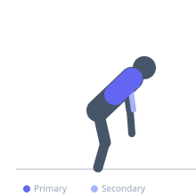
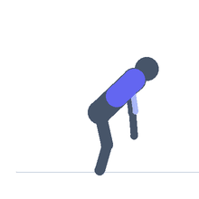

Exercise guide / Plate-Loaded Machine Row — High Row
Plate-Loaded Machine Row — High Row
The plate-loaded high row machine (such as the Hammer Strength High Row) features independent arms that allow each side to move through a natural arc, accommodating individual shoulder mechanics. The high row angle targets the upper lats, rhomboids, and rear deltoids more directly than a low or neutral row. The chest is supported, eliminating lower back involvement and allowing isolation of the upper back musculature.
Primary muscles
latissimus dorsi
rhomboid major
deltoid posterior
Secondary muscles
trapezius middle
biceps brachii long head
Stabilizers
trapezius lower
Equipment
Weight Plates


Starting position
- Load the machine with weight plates. Sit facing the machine with the chest on the pad. Grip the handles at a neutral or pronated position with arms extended.
Setup
- Adjust seat height so the handles are level with the upper chest or face when seated. Keep the chest on the pad throughout the movement.
Steps
- Step 1: Grip the handles with the arms extended, chest on the pad.
- Step 2: Retract the scapulae and pull both handles toward the upper chest/face.
- Step 3: Drive the elbows back and out, keeping them at approximately shoulder height.
- Step 4: Squeeze hard at peak contraction.
- Step 5: Return under control to full extension.
Coaching cues
- Elbows high and back
- Chest on the pad
- Think rear delt and rhomboids — not just lats
Breathing
- Exhale on the pull, inhale on the return.
Range of motion
- Full arm extension at the start to handles near the upper chest at the finish.
Tempo
- 2-1-3-0
Common mistakes
- Pulling the handles too low, shifting from a high row to a mid row pattern
- Not fully extending at the bottom of each rep
Safety
- Adjust seat height carefully — improper positioning causes shoulder impingement
- Do not use excessive weight that prevents full scapular retraction
Training
- strength: 6–10 reps
- hypertrophy: 10–15 reps
- strength: 3–4 sets
- hypertrophy: 3–4 sets
- Rest: {'strength': 120, 'hypertrophy': 90}